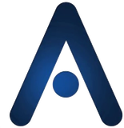
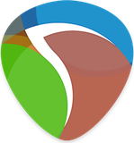
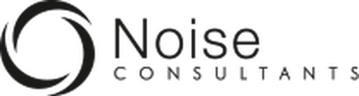
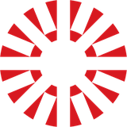
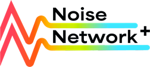
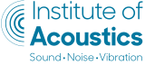

How the Research Works
-
01
Soundscape
Real places are recorded, then drones, eVTOL aircraft, heat pumps and EVs are added at realistic levels.
-
02
Auralisation
Each scene is rendered spatially, so listeners hear it as they would standing there.
-
03
Listening Panels
Participants rate annoyance in controlled jury tests, across different ambiences and contexts.
-
04
Machine Learning
Models learn which acoustic, operational and contextual factors drive the ratings.
-
05
Prediction
Annoyance can be estimated for scenarios that do not exist yet, giving regulators evidence and engineers a target.
-
06
Findings
Models trained on listener ratings predict drone and aircraft annoyance more reliably than traditional metrics alone. See the papers
Research Collaborations
- Defra — PhD Sponsor
- HEAD Acoustics GmbH — Journal Paper
- Joby Aviation Ltd. — Journal Paper
- PhD Sponsor
- Journal Paper
- Journal Paper
Publications
-
2027
Multi-Model Analysis for Prediction of Perceived Annoyance from UAVs
Journal of the Acoustical Society of America (JASA), 2027.
-
2027
Psychoacoustic Assessment of UAV Noise in Varying Ambiences, Operational Conditions and Contexts
Forum Acusticum 2027, Brussels.
Awarded Best Student Paper
-
2027
Impacts on Soundscape Perception from eVTOL Flyovers in Existing Urban Ambiences
AIAA 2027, San Diego.
-
2026
Comparing a General Sound Quality Metric for Aircraft Noise Using a Pre-Trained Neural Network Model to Traditional Psychoacoustics
Quiet Drones 2026, Delft. Human Response to UAS and UAM Noise. With HEAD Acoustics GmbH.
-
2025
Comparison of Deep Learning and Psychoacoustic Models to Predict UAV Noise Impact in Soundscapes
Forum Acusticum EuroNoise 2025, 11th Convention of the European Acoustics Association, Málaga, pp. 2121–2127.
Software Proficiencies




Experience
-
Aug 2027 – Oct 2027
Research Engineer (PhD Placement)
Dyson
- Assessing whether structural vibration can underpin sound quality metrics for product components, comparing vibration and sound quality data across anechoic, semi-reverberant and reverberant conditions.
- Applying transfer learning across sound quality metrics and jury test data from other products, to build machine learning models that predict listener response and satisfaction.
-
Sep 2026 – May 2027
Visiting Lecturer
University of the West of Scotland
- 1st Supervisor on the Major Project (Dissertation) module for BSc (Hons) Music Technology students specialising in Acoustics and Environmental Noise.
-
Aug 2026 – Oct 2026
Specialist Consultant (PhD Placement)

Noise Consultants Ltd. (part of Logika Group)- Validated open-source noise measurements against modelled Defra noise-mapping data for infrastructure assessment.
- Ran a field campaign on an airport expansion project comparing physical and perceptual dominance of aircraft noise.
-
2026 – Present
Associate Lecturer, Computer Science
St Mary’s University, Twickenham
- Teaching, marking and moderation across the online MSc Computer Science suite.
- Module reviewer and author.
-
2026 – Present
Teaching Assistant, Applied Acoustics
University of Salford
- Lab demonstrator for Environmental Noise Measurement and Modelling (BEng/MSc).
- Tutor for Immersive Sound Reproduction (MSc/PgDip).
Education
-
2025 – 2028
PhD Acoustics and Audio Engineering
ThesisPsychoacoustic Assessment and Machine Learning-Based Modelling of Novel Noise Source Perception in Complex Soundscapes

University of Salford Acoustics Innovation Institute -
2023 – 2024
MSc Computer Science with Artificial Intelligence
DissertationA Future Research Framework: Psychoacoustic Annoyance Models and Deep Learning for Prediction of UAV Noise Affect
Distinction
Abertay University
-
2021 – 2023
BDes (Hons) Sound for Moving Image
DissertationA Comparative Analysis of AI Tools for Electronic Music Production: Large Language Models, Generative-AI and Virtual Composers
2:1
University of Glasgow
-
2019 – 2021
DipHE Music Technology
Distinction
University of the West of Scotland
Awarded BSc Level 8 Court Medal
-
2019
BTEC Level 3 Digital Synthesis and Sampling
Pass
Fife College
-
2018 – 2019
SCQF Level 6 Sound Production
Pass
Glasgow Clyde College Anniesland
Working Groups and Committees
- NASA Unmanned Aircraft Systems Noise Working Group (UNWG) — Member
- Noise Network Plus A.I. and Digital Working Group — Member
- Institute of Acoustics Scottish Branch and Early Careers Group — Committee Member
- Unmanned Aircraft Systems Noise Working Group (UNWG)Member

A.I. and Digital Working GroupMember
Scottish Branch andEarly Careers GroupCommittee Member
Certifications
Advanced Prompt Engineering
Vanderbilt University
Advanced R Programming
Johns Hopkins University
AI for Noise Pollution Control
LSIB
Applications of AI in Acoustics
European Acoustics Association Summer School
Auralization
Autumn School Series in Acoustics (ASSA) 2026
Digital Signal Processing
EPFL
Ethics of Artificial Intelligence
Politecnico di Milano
Responsible Research and Innovation
ORBITRRI
Transformer Models and BERT Model
Google
Trustworthy Generative AI
Vanderbilt University